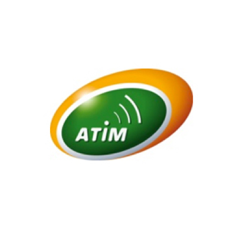

About SIGFOX
In a few words
SIGFOX is an operated telecommunication network, dedicated to the Internet of Things.
It is an operated network, meaning you do not have to handle any installation or maintenance operations.
SIGFOX is seamless and out-of-the box, allowing you to forget about communication and keep focused on the core of your project.
It is a LPWA (Low-Power Wide-Area) network, currently deployed in Western Europe, San Francisco, and with ongoing tests in South America & Asia.
The SIGFOX allows a bidirectional communication, both from & to the device.
The communication is always initiated by the device.
The SIGFOX protocol is designed for small messages sent every now and then. It is not appropriate for high-bandwith usages (multimedia, permanent broadcast).
Its focus on energy efficiency allows you to build connected devices able to last years on a standard battery.
Technology
The SIGFOX network operates on sub-GHz frequencies, on ISM bands : 868MHz in Europe/ETSI & 915MHz in the US/FCC.
SIGFOX uses an Ultra-Narrow Band (UNB) modulation, which is key to our ability to provide a scalable & high-capacity network.
With a 162dB budget link SIGFOX enables long range communications, with much longer reach than GSM.
There is no negotiation between the device and a receiving station. The device simply emits in the available frequency band (+/- its own frequency shift).
The signal is detected by the closest base stations, decoded & forwarded to the network backend.
Deduplication & other protocol operations are handled by the network itself.
Messages are then forwarded to your own application, and made accessible using SIGFOX's API.
Each message is authenticated using a hash mechanism, and a private key specific to the device.
This offers a great protection against replay attacks.
The SIGFOX radio protocol also offers a great resistance to interferers.
SIGFOX Specifics
In a few words
- Up to 12 bytes per message
- Up to 140 messages per day
Message size
You can send up to 12 bytes (96 bits) per message.
The protocol metadata already includes a timestamp & the device unique id.
Number of messages
The maximum number of messages that can be sent each day is 140.
This limitation is introduced, in part, to comply with regulations. The european regulation governing the 868MHz band enforces a transmission duty cycle of 1%.
A unique device is therefore not allowed to emit more than 1% of the time each hour and since emission of a message can take up to ~6 seconds, this allows up to 6 messages per hour.
How to get started ?
You need 3 things to get started with SIGFOX :
Prototyping
Arduino boards & shields
Akeru
Designed by Snootlab, an Arduino-like board, with an Atmega328 µcontroller and a Telecom Design TD1208 SIGFOX module.
It ships with a one-year subscription to the SIGFOX network. You can use the Arduino IDE to program and simply send your AT commands over serial.
A small Arduino lib allows you to send messages as easy as
//Akeru sample
#include <Akeru.h>
struct sigfoxData {
int numValue;
} data;
data.numValue = getValue();
Akeru.begin();
Akeru.send(&data, sizeof(data)));
Atmel ATAK55002-V2 shield
Full documentation (PDF) here. The Atmel ATAK55002-V2 extension board is a hardware platform for evaluating the Atmel ATA8520 SIGFOX transmitter. This Arduino shield includes the Atmel ATA8520 SIGFOX transmitter and an Atmel AT30TS75A temperature sensor. This shield does not come with a valid subscription - you need to contact us to subscribe. Use the Arduino IDE to program and send your messages over serial. Atmel provides Arduino libs to handle both the temperature sensor & the SIGFOX transceiver.
//Atmel Sample
#include "AtmSIGFOXshd.h"
SIGFOXshield SIGsh;
SIGsh.begin();
SIGsh.SIGFOXon();
unsigned char message[2];
message[0] = 0x01;
message[1] = 0x02;
SIGsh.sendMessage(message,sizeof(message));
SmartEverything
The Atmel Technology SmartEverything SoM (System On Module) is based on Atmel D21 Ultra low-power µcontroller, using the 32-bit ARM Cortex-M0+ processor.
The SmartEverything Board provides the following peripherals or modules
- Atmel Crypto Authentication chipset
- Dynaflex 868Mhz Antenna
- Sigfox Module (Telit LE51-868S)
- GPS Module with Embedded Antenna
- Proximity sensor
- Humidity and Temperature sensor
- Axis sensors
- Pressure Sensor
- NFC NTAG I2C Interface
- Bluetooth Low Energy (BLE) Interface
More information on the SmartEverything website.
Akene
Designed by Snootlab, the Akene is an Arduino shield with a Telecom Design TD1208 SIGFOX module.
It ships with a one-year subscription to the SIGFOX network. You can use the Arduino IDE to program and simply send your AT commands over serial.
A small Arduino lib allows you to send messages easily
//Akene sample
#include <Akene.h>
struct sigfoxData {
int numValue;
} data;
data.numValue = getValue();
Akene.begin();
Akene.send(&data, sizeof(data)));
The Airboard
The Airboard is an Arduino-compatible board, built upon the Arduino IDE. It is a tiny SIGFOX module with a Xbee format. The module can be programmed wirelessly, through a BLE dongle They're currently serving their Kickstarter backers, and will soon take new orders.
Raspberry Pi
SNOC - RPISIGFOX
This Raspberry Pi shield comes with a one-year valid subscription, a custom case and a DIN-rail mount. You can check the associated Python library on Github
Evaluation Kits
Adeunis
The Adeunis RF Evaluation Board Si868 provides a very simple access to the UART of the module. In addition, the evaluation board provides an RF output designed to obtain the best Si868 module performance.
Check Adeunis-rf.com for details about the Si868 Evaluation Board
Documentation here (PDF).
Libellium
Waspmote OEM is a sensor device platform oriented to developers. It works with short-range, medium-range and long-range communication protocols (i.e. ZigBee, Bluetooth, 3G/GPRS, Wi-Fi) and frequencies (2.4GHz, 868MHz, 900MHz), and is capable of sending data at extremely low rates and long distances. Waspmote features an extremely low power hibernate mode of 0.6uA that conserves battery power when the node is not transmitting. More than 100 different types of sensors are available, and a complete open source IDE (API libraries + compiler + code generator) makes working with the Waspmote platform quick and easy.
TST
TST has a development kit available for its TSmote platform
The TSmote is powered by a 32-bit ARM Cortex M3 µprocessor, and the SIGFOX starter kit includes a Xbee-format SIGFOX module
SIGFOX module online documentation, and datasheet (PDF).
The TSmote is to be programmed in standard C, and the SIGFOX module is controlled with AT commands.
Telecom Design
Telecom Design has Evaluation Boards available for their modules
You can order them through their distributor, Avnet-Memec
Telecom Design provide a full SDK, with complete examples.
The modules are controlled using AT commands, but you can also flash your own firmware & use them autonomously.
To do so, Telecom Design provides a full SDK (using Eclipse) and working examples.
Documentation is available on the TD-next official website.
SDK & full datasheets and documentations are available on their Github account
TD1204
The TD1204 combines a SIGFOX-certified radio transceiver, an ARM Cortex M3 µcontroller and a GPS & an 3-axis accelerometer, allowing you to build complete solutions with a single component.Documentation here (PDF)
TD1208
The TD1208 is a SIGFOX-certified radio transceiver, combined with a ARM Cortex M3 µcontroller.
Compatible with the Telecom Design SDK.
Documentation here (PDF)
Telit
The LE51-868 S is a high performance certified Short Range to Long Range module designed to cover the 863-870 MHz band working with the Telit Proprietary protocol and acting as a SIGFOX gateway
The evaluation board can be programmed, or controlled by AT commands
Check Telit.com for details about the LE51-686 S
Documentation here (PDF).
SIGFOX radio transceivers, SoC & modules
SIGFOX is available from leading silicon and module vendors
SIGFOX makes its IP available at no cost to silicon and module vendors. This strategy has encouraged leading silicon and module vendors to integrate SIGFOX in their existing assets, giving solution enablers a wide choice of very competitively priced components.
SIGFOX enables bi-directional as well as mono-directional communications and can co-exist with other communication protocols, both short and long range.
High energy consumption has been a major obstacle with regards to unleashing the potential of the Internet of Things, which is why one of the key elements of the SIGFOX strategy is to continue to push the boundaries for energy consumption lower and low
The increasing number of M2M and Internet of Things solutions calls for better interoperability solutions, which can only come through standardization. As the first Internet of Things operator, SIGFOX has taken a lead in this process through the foundatio
Check the Technology Enablers section of our website to keep posted on the list of available modules & transceivers from our partners.
Atim
API & Callbacks
Once a device sends a message, there are 3 ways to fetch & use the data :
- Web interface on http://backend.sigfox.com
- REST API
- Callback mechanism
REST API
To access the API, you need to set up your access first.
To do so, go to the Group section on http://backend.sigfox.com .
In the sidebar, click on API access & then click New in the top-right corner.
You should now see your credentials, and a link to the API documentation relevant to your access rights
Using the API you can :
- Retrieve the list of devices associated to a device type
- Retrieve the messages of a given device
- Get metrics about a device's messages
Callbacks
You can subscribe to receive an HTTP callback for every message received & processed by the SIGFOX backend.
The following data will be sent to your application :
You can optionally subscribe to receive a callback each time a station receives your message. Deduplication will then occur on your side.
You can choose to receive the callback using a GET or POST HTTP request.
| Variable | Meaning | Unit |
|---|---|---|
| device | Device unique ID | |
| time | Timestamp of the message | seconds |
| data | The data payload you sent | |
| rssi | Received Signal Strength Intensity on the base station that received your message. | dBm |
To avoid side effects, you should send an HTTP 200 response as soon as the callback is received on your side.
If the SIGFOX backend receives an error status, it assumes that the message wasn't properly received, and send a retry shortly after. This will be seen as another message by your system.
An example of a quick implementation of a callback handler is available here.
Coverage
SIGFOX coverage, as of October 2015
Contact us for details & questions about current coverage, and stay tuned for future announcements !
New countries will be annouced in the coming weeks
Nationwide coverage
France
Spain
The Netherlands
The United Kingdom (10 of the largest cities)
On-going rollout
Belgium
Czech Republic
Denmark
Italy
Luxembourg
Portugal
USA
Spot coverage (citywide)
Bogota (Colombia)
Dublin (Ireland)
Milan (Italy)
Munich (Germany)
Prague (Czech Republic)
San Francisco (USA)
Santiago (Chile)
Vienna (Austria)
Warsaw (Poland)
Contact
Nicolas Lesconnec
Developer & Maker Evangelist
devrelations@sigfox.com
@nlesconnec
@nicolsc